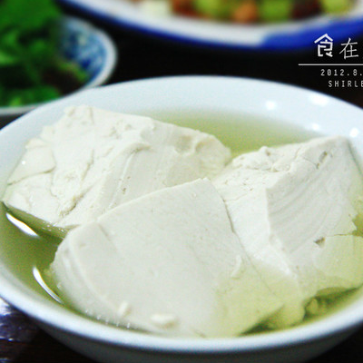
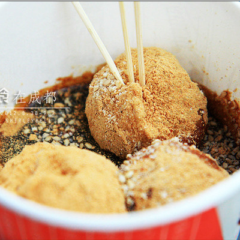
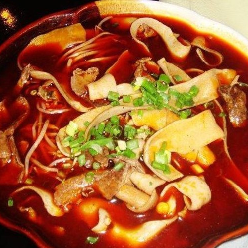
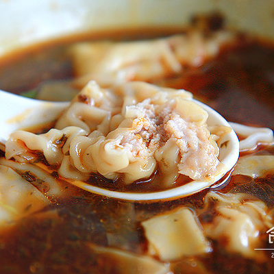
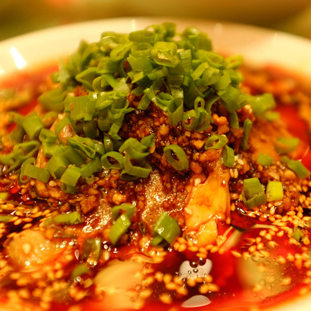
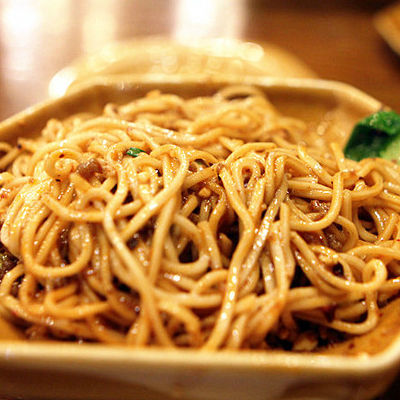

成都小吃种类连老成都人都数不过来，从各色小面到抄手、饺子，从腌卤到凉拌冷食，从锅煎蜜饯到糕点汤元，从蒸煮烘烤到油酥油炸，琳琅满目，各味俱全，种类不下200种。成都的大街小巷，到处都能看到小吃店。麻辣红亮，味美爽口的夫妻肺片、酸辣相宜，臊子香脆的担担面、红味鲜香麻辣，白味汤汁鲜美的钟水饺、历史悠久，用料考究，回味悠长的赖汤圆 、粉条精抖，口味鲜香的复兴肥肠粉，还有张老五川北凉粉、龙抄手；以及遍及大街小巷的卤肉锅魁、宜宾燃面、灯影牛肉、蛋烘糕等等，都是成都特有的地道小吃，而且风味突出，深受本地人以及外来游客的欢迎。
Let's talk about the food

豆 花
豆 花
甜、咸
豆花是四川常见的家常美味菜肴，比豆腐脑要老一点。喜咸辣口味可选馓子豆花或麻辣豆花，大热天或吃辣食时可来一碗冰醉豆花，口感清凉爽滑又稍带甜味，那解暑消辣的效果绝不比冰淇淋差。

三大炮
三大炮
甜
一种糯米类型的甜点，类似红糖糍粑，但比较具有观赏性。一份有三个糯米团，扔到中间平台上，发出一阵声响后落入后面容器里裹上粉。做一份能听三声响儿，挺有趣。

冒菜
冒菜
咸、辣
“冒菜”是成都的特色菜，“冒”字在这里是动词。准备一锅麻辣鲜香的汤汁，把菜用一个竹勺装好，一般一勺就是一份。在锅里煮熟，然后盛到碗里，顺便再舀一勺汤汁。冒菜的原料不限，这点和串串香类似，什么都可冒，什么都可上桌。

抄手
抄手
嫩、香、辣
用清水和面做皮，皮内包上菜、或肉、或糖、或蜂蜜等作馅，用水煮熟。通常将鲜肉馄饨搭配以辣油为主的酱料食用，是四川特有的料理。

夫妻肺片
夫妻肺片
咸、辣
四川名菜夫妻肺片属于冷菜，麻辣味型。牛肉、牛杂等肺片切得薄薄的，拌好吃起来又麻又辣，非常下饭，但比较重油。

担担面
担担面
咸、辣
正宗的担担面必须是老师傅用面粉擀制的面条，面条细而薄，还有最关键一笔是要舀上四川正宗的碎米芽菜佐味。担担面一般都是小碗盛装，量少质精，清清爽爽的一碗，有红油卧底，再加上脆脆的花生米，着实令人食指大动。